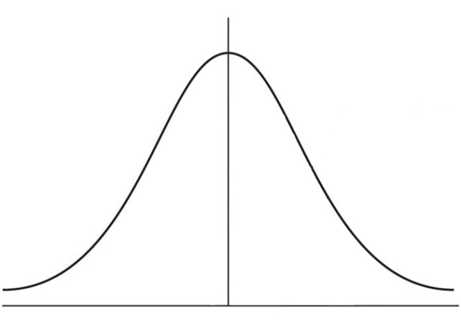

Calculating the probability under a normal curve is useful for engineers. This type of calculation can be useful to predict the likely hood of a part coming of an assembly line being within a given specification when the statistical properties of all the parts that have come of the assembly line previously are known.
In this post we will calculate the probability under the normal curve to answer a question like the one below:
Given: In a facility that manufactures electrical resistors, a sample of 35 1-kΩ resistors are randomly pulled from the production line, and their resistances are measured and recorded. A mean resistance of 979.8 kΩ and a standard deviation of 73.10 kΩ represents the sample of resistors. The desired resistance tolerance for the resistors is ± 10%, meaning that the acceptable range of resistance is 900 Ω to 1100 Ω.
Find: Assuming a normal distribution, determine the probability that a resistor coming off the production line will be within spec.
To build our script we need to accomplish a couple of things:
- Import the necessary functions. We need to use the
erf()andsqrt()functions in themathmodule. - Define the constants for this problem. The mean, standard deviation, lower bound and upper bound will be defined.
- Calculate the probability using the
erf()function - Print the results to the Python interpreter
Let's take a look at a gaussian curve

This shape of the curve describes the spread of resistors coming off the production line. We need to find the area under the curve within our upper and lower bounds.
Open up a new Python script called stats.py. In the first line of code we import the erf and sqrt() functions from the math module. Because the math module is part of the standard library, it does not need to be installed using conda or pip.
# stats.py
from math import erf, sqrt
Now we need to define the constants
# define constants
mu = 979.8 # mean = 978.8 kΩ
sigma = 73.1 # standard deviation = 73.1 kΩ
x1 = 900 # lower bound = 900 kΩ
x2 = 1100 # upper bound = 1100 kΩ
Next we calculate the probability using the erf() function
# calculate probability
# Probability from 0 to lower bound
double_prob = erf( (x1-mu) / (sigma*sqrt(2)) )
p_lower = double_prob/2
print('\n'+ str(p_lower))
# Probability from 0 to upper bound
double_prob = erf( (x2-mu) / (sigma*sqrt(2)) )
p_upper = double_prob/2
print('\n'+ str(p_upper))
From the upper and lower limits, we calculated two probabilities: p_lower and p_upper. We can use these to calculate the probability a resistor randomly pulled off the line is within tolerance (inside the range) or out of tolerance (outside the range).
Pin= (p_upper) - (p_lower)
print('\n')
print('mean = %.2f std dev = %.2f \n' % (mu,sigma))
print('Calculating probability of occuring between %.4f <--> %.4f \n' % (x1,x2))
print('inside interval Pin = %.2f%% \n' % (Pin*100))
print('outside interval Pout = %.2f%% \n' % ((1-Pin)*100))
print('\n')
The output of our stats.py script is:
mean = 979.80 std dev = 73.10
Calculating probability of occuring between 900.0000 <--> 1100.0000
inside interval Pin = 81.25%
outside interval Pout = 18.75%
So back to our original question:
determine the probability that a resistor coming off the production line will be within spec.
This is the probability of a resistor being inside the interval, 81.25 %
In the next post, we will use Python and matplotlib to build a curve that describes this problem.